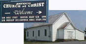
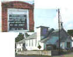
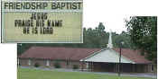
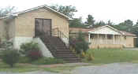
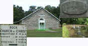
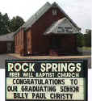
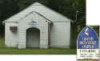
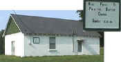

IMAGES From
Nostalgiaville
TENNESSEE- Dickson County,
TN- 8/99

|
IMAGES From
Nostalgiaville |
Memories are the Essence of Civilization | |
NOTE: A Click of your Mouse on most of the pictures will enlarge them for better viewing
Back To: IMAGES - The FARM - GIFT STORE - MUSEUM - HOME
HOME
| WELCOME to DICKSON COUNTY, Tennessee- 8/99 |
| GOLF IN DICKSON COUNTY |
| Dickson Country
Club 800 Hwy 70 W |
Public Holes: 9 Par: 36 Length (Ft) 3,250 |
| MINIATURE GOLF Seven Flags Race Park I40 & Hwy 46 Miniature golf Go carts |
DRIVING RANGE Dickson Golf Center 1075 Christi Rd |
||
| Greystone Golf Public Holes:18 Par:72 $35-$55 |
|
||
| PEOPLE OF DICKSON COUNTY |
|
Born on this site, June 2, 1920. Clement spent his childhood in Dickson. Famous as an orator, he was three times elected Governor of Tennessee, for a two-year term in 1954 and 1962. Among the programs inaugurated during his tenure were the organization of the Department of Mental Health, creation of the state's first speech and hearing center, beginning of a long range highway construction project, and the providing of free textbooks for school children. FRANK GOAD CLEMENT |
| Robert Bell | First permanent resident, 1793
Settled on Jones Creek |
| William
Dickson click here visitor input |
County named after William Dickson Dickson never lived in county named after him Was a Nashville physician and statesman who served in Congress Born in Dublin County, NC in 1770 Studied medicine and established a practice in Nashville by 1795 By 1799, Dickson was speaker of the State House of Representatives Served in Congress from 1801 to 1807 Died in Nashville in 1816 |
| General James Robertson | Robertson established Cumberland Iron Works 1795 |
| Settlers in County by 1803 |
| Barton's Creek | Montgomery Bell, John Nesbitt, Abraham Caldwell, and James Richard Napier |
| Jones Creek | A Revolutionary soldier named Christopher Strong, Molton Dickson, James martin, and Robert Harper |
| Johnson's Creek | George Tubbs and William Ward |
| Turnbull Creek | Minor Bibb, Edward Tidwell, John Brown, Milton Johnson, and William and Thomas Gentry |
| Piney River | William Hogins and Thomas Perry |
| Settlers along Yellow Creek or Jones Creek by ca 1800 or before(thank you G.J.) |
| David Dickson first county clerk |
| Joseph Dickson, wife, Jane Moulton Dickson, and eight sons
including David and Molton all settled in county Joseph Dickson's will was first probated --in 1804 |
| HISTORY OF POST OFFICES |
| Abiff | Opened: January 22, 1887 | Closed: March 15, 1906 |
| Barton’s Creek | Opened: October 26, 1841 Reopened: May 28, 1867 Reopened: November 13, 1871 |
Closed: July 18, 1866 Reclosed: August 9, 1869 Reclosed: July 18, 1866 |
| Batson | Opened: August 21, 1829 Reopened: November 13, 1878 | Closed: October 6, 1841 Reclosed: August 15, 1905 |
| Beckley | Opened: December 22, 1880 | Closed: September 2, 1881 |
| Bell | Opened: November 18, 1889 | Closed: February 6, 1890 |
| Bellsburg | Opened: September 12, 1893 | Closed: October 31, 1905 |
| Bellsburgh | Opened: October 24, 1849 Reopened: February 12, 1878 | Closed: July 18, 1866 Reclosed: September 12, 1893 |
| Betsytown | Opened: December 23, 1891 | Closed: October 30, 1909 |
| Bon Aqua | Opened: June 19, 1874 | Closed: September 3, 1879 |
| Brewer | Opened: December 19, 1904 | Closed: August 31, 1906 |
| Burn’s Station | Opened: June 27, 1866 | Closed: November 29, 1882 |
| Burns | Opened: November 7, 1890 | Closed: Operating |
| Byron | Opened: February 17, 1890 | Closed: June 3, 1892 |
| Cave Mills | Opened: February 19, 1877 | Closed: October 20, 1896 |
| Charlotte | Opened: January 1, 1807 | Closed: Operating |
| Clover Valley | Opened: July 30, 1833 | Closed: November 2, 1833 |
| Cloverdale | Opened: November 4, 1875 | Closed: December 15, 1921 |
| Colesburg | Opened: September 12, 1891 Reopened: June 7, 1893 |
Closed: May 15, 1893 Reclosed: July 31, 1918 |
| Colesburgh | Opened: September 3, 1879 | Closed: September 12, 1891 |
| Cumberland Furnace | Opened: February 20, 1867 | Closed: Operating |
| Daniel | Opened: April 24, 1900 | Closed: October 31, 1905 |
| Danielsville | Opened: November 25, 1842 Reopened: May 22, 1868 |
Closed: July 25, 1866 Reclosed: April 14, 1906 |
| Dickson | Opened: July 15, 1869 | Closed: Operating |
| Dukes | Opened: December 18, 1827 | Closed: August 30, 1828 |
| Dull | Opened: April 7, 1884 | Closed: January 15, 1906 |
| Edgewood | Opened: June 9, 1888 | Closed: April 14, 1906 |
| Ellisville | Opened: May 28, 1842 | Closed: November 25, 1842 |
| Fewville | Opened: May 12, 1894 | Closed: April 30, 1902 |
| Flatpond | Opened: May 11, 1894 | Closed: July 15, 1905 |
| Foxville | Opened: July 23, 1891 | Closed: June 27, 1895 |
| Genevaton | Opened: March 9, 1885 | Closed: June 25, 1886 |
| Gillem | Opened: November 29, 1882 | Closed: April 10, 1886 |
| Gillems Station | Opened: October 6, 1865 Reopened: January 21, 1869 | Closed: October 17, 1869 Reclosed: November 29, 1882 |
| Glendale | Opened: June 29, 1866 | Closed: November 17, 1868 |
| Green Valley | Opened: April 18, 1831 | Closed: April 4, 1834 |
| Grimes | Opened: May 6, 1891 | Closed: January 2, 1894 |
| Hamble | Opened: March 3, 1893 | Closed: September 30, 1914 |
| Harrington | Opened: February 1, 1899 | Closed: January 14, 1902 |
| Hazel Ridge | Opened: May 28, 1877 Reopened: May 19, 1893 | Closed: December 2, 1892 Reclosed: June 15, 1906 |
| Heath | Opened: September 7, 1891 | Closed: August 31, 1905 |
| Hoberdale | Opened: March 31, 1896 | Closed: January 4, 1894 |
| Hortense | Opened: December 4, 1894 | Closed: June 16, 1897 |
| Hutton’s Station | Opened: October 6, 1865 | Closed: January 29, 1866 |
| Independence | Opened: September 20, 1852 | Closed: September 22, 1866 |
| Jones Cross Roads | Opened: December 22, 1832 | Closed: October 13, 1842 |
| Larkins | Opened: May 15, 1883 Reopened: April 20, 1899 | Closed: April 4, 1898 Reclosed: March 31, 1902 |
| Laurel Furnace | Opened: December 14, 1827 Reopened: June 22, 1858 |
Closed: June 5, 1834 Reclosed: July 10, 1860 |
| Lewiston | Opened: August 16, 1867 | Closed: May 21, 1869 |
| Lone Oak | Opened: March 5, 1879 | Closed: December 26, 1879 |
| Malamison | Opened: September 13, 1837 | Closed: July 10, 1839 |
| Maysville | Opened: July 26, 1832 | Closed: May 28, 1842 |
| Meek | Opened: November 6, 1893 | Closed: February 25, 1898 |
| Murray | Opened: May 28, 1900 | Closed: December 31, 1903 |
| McKee | Opened: October 24, 1890 | Closed: April 16, 1891 |
| Noble | Opened: July 5, 1894 | Closed: June 22, 1895 |
| Nosegay | Opened: December 19, 1902 | Closed: August 31, 1905 |
| Pardue | Opened: September 26, 1904 | Closed: October 15, 1917 |
| Phillipsville | Opened: | Closed: May 5, 1837 |
| Piney River | Opened: December 4, 1827 | Closed: September 12, 1846 |
| Pomona Road | Opened: April 24, 1900 | Closed: December 31, 1907 |
| Redden | Opened: February 24, 1894 | Closed: April 30, 1902 |
| Rock Church | Opened: January 15, 1887 | Closed: November 24, 1888 |
| Rossland | Opened: April 9, 1850 | Closed: August 28, 1851 |
| Ruskin | Opened: October 20, 1896 | Closed: January 15, 1927 |
| Schmitton | Opened: October 29, 1892 | Closed: March 2, 1894 |
| Shegag’s Store | Opened: May 31, 1830 | Closed: May 14, 1834 |
| Slayden | Opened: May 2, 1894 | Closed: Operating |
| Slayden View | Opened: January 3, 1893 | Closed: May 2, 1894 |
| Smithville | Opened: December 18, 1827 | Closed: est. ca 1831 |
| Sneedville | Opened: October 25, 1865 | Closed: May 3, 1866 |
| Sneedville Station | Opened: May 3, 1866 | Closed: July 15, 1869 |
| Spencers Mills | Opened: January 21, 1878 | Closed: April 14, 1906 |
| Stayton | Opened: May 21, 1892 | Closed: May 25, 1953 |
| Swamp | Opened: December 27, 1890 | Closed: October 30, 1895 |
| Sylvia | Opened: July 10, 1890 | Closed: October 29, 1971 |
| Tennessee City | Opened: April 10, 1886 | Closed: January 26, 1968 |
| Tennessee Iron Works | Opened: March 17, 1819 | Closed: August 7, 1827 |
| Treswell | Opened: January 26, 1903 | Closed: June 15, 1925 |
| Turnbull | Opened: June 22, 1858 Reopened: July 17, 1871 Reopened: April 24, 1900 | Closed: September 22, 1866 Reclosed: September 24, 1875 Reclosed: December 31, 1903 |
| Vanleer | Opened: April 16, 1891 | Closed: Operating |
| White | Opened: May 17, 1855 | Closed: Operating |
| Williamsville | Opened: September 26, 1832 Reopened: May 23, 1843 |
Closed: March 12, 1836 Reclosed: September 22, 1866 |
| Woodhaven | Opened: August 4, 1893 | Closed: December 18, 1895 |
| Woods Valley | Opened: September 26, 1871 | Closed: October 31, 1905 |
| Work | Opened: August 5, 1841 | Closed: January 20, 1895 |
| Worley | Opened: February 6, 1890 | Closed: February 5, 1891 |
| Worley Furnace | Opened: May 21, 1869 | Closed: February 26, 1875 |
| Yellow Creek | Opened: February 21, 1818 | Closed: ca. est 1826 |
| CHURCHES OF DICKSON COUNTY |
| Church History Before 1800 Little is known of the religions of Dickson County prior to 1800 Baptists, Methodists, and Presbyterians had been organized No church buildings had been erected |
| Early Church History of
Dickson County The first church building was probably located one half mile west of Charlotte. It was built by the Psalm Singers led by Rev Samuel Brown in 1804. The small group had seceded from the Presbyterian Church. The Cumberland Presbyterian Church was organized on February 3, 1810. The next church organized was New Hope Church located four miles northwest of Charlotte New hope was followed by Johnson Creek, Bethel, Bethlehem and Mount Liberty Church. The first Methodist Church, called Smyrna, was built on Sulfur Creek in 1810 Baptist, Christian, Lutheran, and Episcopal churches were soon organized. Several Black Baptist and African Methodist churches followed. |
Jones Creek Rd |
 Hwy 49 E |
|
| Acorn Hill Church of Christ | Antioch Church of Christ | Bear Creek Pentecostal Church |
Claylick Rd & Hwy 250 |
||
| Bible Believers Fellowship Church | Bible Missionary Baptist Church | Big Springs Church |
|  | Porter Rd Abiff Community |
Old Charlotte Rd |
| Bowman Chapel United Methodist Church | Brown’s Chapel Church of Christ | Calvary Baptist Church |
Rebuilt 1955 |
1266 Claylick Rd |
|
| Cedar Grove United Methodist Church | Chestnut Grove Free Will Baptist Church | Claylick Church of God |
Organized 1810 Building erected 1985 |
101 Henslee Dr |
|
| Cumberland Presbyterian Church | Dickson Church of Christ | Dickson First Baptist Church |
502 W College St |
746 Hwy 46 |
|
| Dickson First Church of the Nazarene | Dickson Seventh Day Adventist Church | Dunn’s Chapel Church of Christ |
New White Bluff Rd off Hwy 96 |
Founded 1845 |
|
| Eastside Baptist Church | Edgewood United Methodist Church | Eno United Methodist Church |
| 1201 Collins Rd |
Nails Creek Rd & Hwy 46 |
|
| Evangel Baptist Church | Explorers Bible Study Church | Fairview Baptist Church |
| Hwy 70 W |
 Main & Murrell St |
 |
| First Assembly of God Church | First Presbyterian Church | Friendship Baptist Church |
Ashland City Hwy |
Hwy 70 W & Weaver Dr |
|
| Hickory Wood Church of Christ | Hillview Baptist Church | House of the Lord Church |
101 McCreary St |
Ashland City Hwy |
|
| House of the Lord Assembly Church | Independent Bible Church | Jackson Chapel United Methodist Church |
| Hwy 96 |
Garners Creek Rd |
Liberty Rd |
| Jackson Temple Church of Christ | Jason Chapel Church of the Nazarene | Liberty United Methodist Church |
715 W Walnut St |
 |
|
| Macedonia Apostolic Church | Maple Grove Missionary Baptist Church | Miller's Chapel Free Will Baptist Church |
Hwy 49 |
 |
Maple Valley Rd |
| Midway Church of Christ | Mount Hebron Church of Christ | Mount Olive Church of Christ |
| Hwy 49 E |
618 Collier Bend Rd |
|
| Mt Lebanon United Methodist Church | Mt Liberty Church | Mt Olive Baptist Church |
Organized 1891 Hwy 47 |
 | |
| New Hope Baptist Church Rebuilt 1949 |
No Name Church | No Name Church |
| 1535 Greenwood Rd |
Hwy 48 S |
Hwy 48 |
| Oak Grove Free Will Baptist Church | Oak Grove United Methodist Church | Piney River Church of Christ |
Pond Dr |
 Rock Church Rd |
|
| Pond Presbyterian Church | Primitive Baptist Church | Rock Church of Christ |
|  | Building erected 1950 713 W College |
|
| Rock Springs Free Will Baptist Church | Soules Chapel United Methodist Church | St Christopher's Catholic Church |
1535 Stayton Rd |
||
| St Paul Church | Second Street
Church of Christ |
Stayton Christian Assembly |
|  | ||
| Stoney Point Free Will Baptist Church |
Sycamore Methodist Church | Sylvia Baptist Church |
Established 1806 |
||
| Sylvia Church of Christ | Tennessee City United Methodist Church | Turnbull Primitive Baptist Church |
Hwy 46 |
Yellow Creek Rd Building erected 1988 |
|
| United Free Will Baptist Church | Walnut Grove Free Will Baptist Church | Walnut Grove Missionary Baptist Church |
| |
2nd St & Dickson Av |
 |
| Wesley’s Chapel United Methodist Church | West Dickson Church of Christ | West Fifth Street Primitive Baptist Church |
| CEMETERIES |
Union Cemetery |
| SCHOOLS OF DICKSON COUNTY |
|
Dickson Elementary School |
Dickson High School |
| NEXT PAGE | PREVIOUS PAGE | BEGINNING PAGE | STATE HOME PAGE |
Back To: IMAGES - The FARM - GIFT STORE- MUSEUM - - DICKSON COUNTY PAGE - HOME


{kind=link}
{kind=link}
{kind=link}
{kind=link}
{kind=link}
{kind=link}
{kind=link}
{kind=link}
{kind=link}
{kind=link}
{kind=link}
{kind=link}
{kind=link}
{kind=link}
{kind=link}
{kind=link}
{kind=link}
{kind=link}
{kind=link}
{kind=link}
{kind=link}
{kind=link}
{kind=link}
{kind=link}
{kind=link}
{kind=link}
{kind=link}
{kind=link}
{kind=link}
{kind=link}
{kind=link}
{kind=link}
{kind=link}
{kind=link}
{kind=link}
{kind=link}
{kind=link}
{kind=link}
{kind=link}
{kind=link}
{kind=link}
{kind=link}
{kind=link}
{kind=link}
{kind=link}
{kind=link}
{kind=link}
{kind=link}
{kind=link}
{kind=link}
{kind=link}
{kind=link}
{kind=link}
{kind=link}
{kind=link}
{kind=link}
{kind=link}
{kind=link}
{kind=link}
{kind=link}
{kind=link}
{kind=link}
{kind=link}
{kind=link}
{kind=link}
{kind=link}
{kind=link}
{kind=link}
{kind=link}
{kind=link}
{kind=link}
{kind=link}
{kind=link}
{kind=link}
{kind=link}
{kind=link}
{kind=link}
{kind=link}
{kind=link}
{kind=link}
{kind=link}
{kind=link}
{kind=link}
{kind=link}
{kind=link}
{kind=link}
{kind=link}
{kind=link}
{kind=link}
{kind=link}
{kind=link}